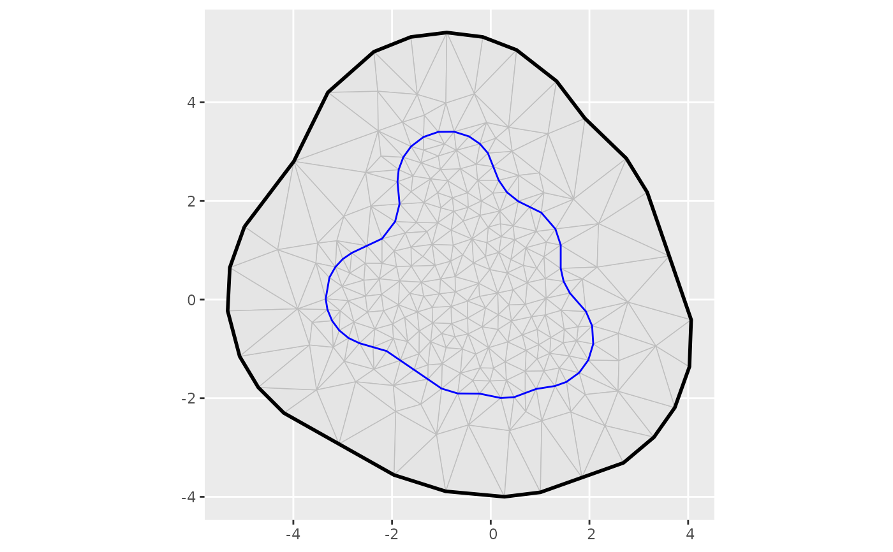
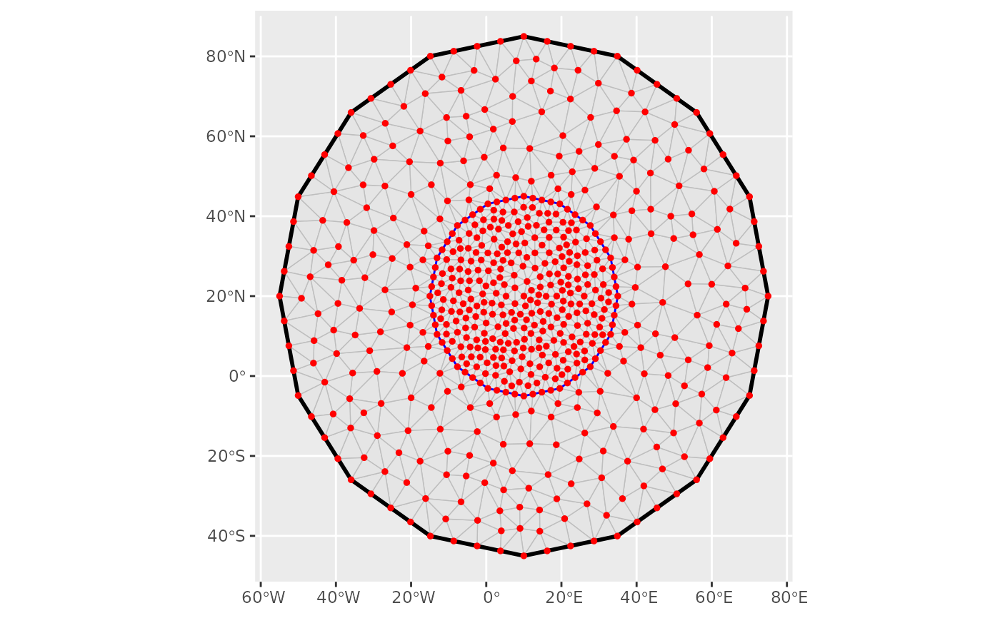
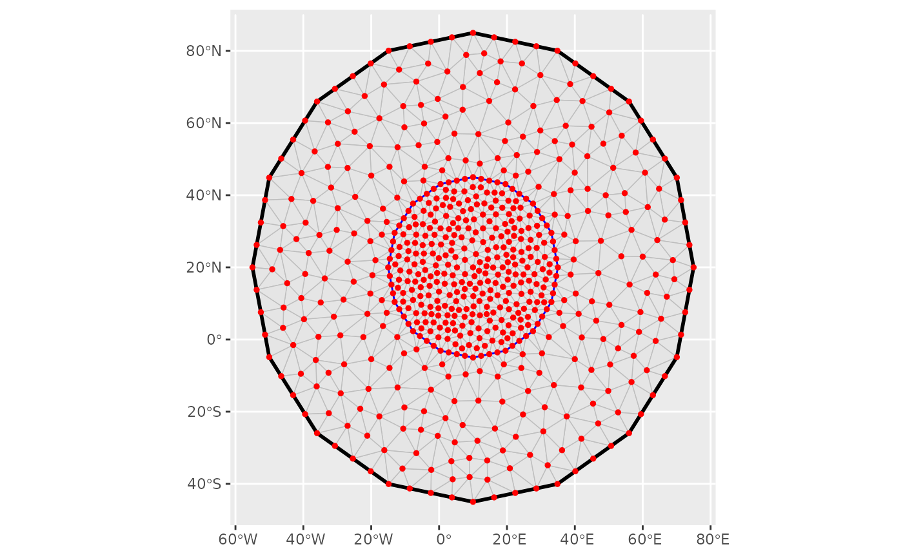

![[Experimental]](figures/lifecycle-experimental.svg)
geom_fm is a generic function for generating geomes from various kinds of
fmesher objects, e.g. fm_segm and fm_mesh_2d.
The function invokes particular methods which depend
on the class of the data argument.
Requires the ggplot2 package.
Note: geom_fm is not yet a "proper" ggplot2 geom method; the interface
may therefore change in the future.
Usage
geom_fm(mapping = NULL, data = NULL, ...)
# S3 method for class 'fm_mesh_2d'
geom_fm(
mapping = NULL,
data = NULL,
mapping_int = NULL,
mapping_bnd = NULL,
defs_int = NULL,
defs_bnd = NULL,
...,
crs = NULL
)
# S3 method for class 'fm_segm'
geom_fm(mapping = NULL, data = NULL, ..., crs = NULL)
# S3 method for class 'fm_mesh_1d'
geom_fm(
mapping = NULL,
data = NULL,
...,
xlim = NULL,
basis = TRUE,
knots = TRUE,
derivatives = FALSE,
weights = NULL
)Arguments
- mapping
an object for which to generate a geom.
- data
an object for which to generate a geom.
- ...
Arguments passed on to the geom method.
- mapping_int
aesfor interior constraint edges.- mapping_bnd
aesfor boundary edges.- defs_int
additional settings for interior constraint edges.
- defs_bnd
additional settings for boundary edges.
- crs
Optional crs to transform the object to before plotting.
- xlim
numeric 2-vector; specifies the interval for which to compute functions. Default is
data$interval- basis
logical; if
TRUE(default), show the spline basis functions- knots
logical; if
TRUE(default), show the spline knot locations- derivatives
logical; if
TRUE(not default), draw first order derivatives instead of function values- weights
numeric vector; if provided, draw weighted basis functions and the resulting weighted sum.
Methods (by class)
geom_fm(fm_mesh_2d): Converts anfm_mesh_2d()object tosfwithfm_as_sfc()and usesgeom_sfto visualize the triangles and edges.geom_fm(fm_segm): Converts anfm_segm()object tosfwithfm_as_sfc()and usesgeom_sfto visualize it.geom_fm(fm_mesh_1d): Evaluates and plots the basis functions defined by anfm_mesh_1d()object.
Examples
ggplot() +
geom_fm(data = fmexample$mesh)

m <- fm_mesh_2d(
cbind(10, 20),
boundary = fm_extensions(cbind(10, 20), c(25, 65)),
max.edge = c(4, 10),
crs = fm_crs("+proj=longlat")
)
ggplot() +
geom_fm(data = m)
 ggplot() +
geom_fm(data = m, crs = fm_crs("epsg:27700"))

# \donttest{
# Compute a mesh vertex based function on a different grid
px <- fm_pixels(fm_transform(m, fm_crs("mollweide_globe")))
px$fun <- fm_evaluate(m,
loc = px,
field = sin(m$loc[, 1] / 5) * sin(m$loc[, 2] / 5)
)
ggplot() +
geom_tile(aes(geometry = geometry, fill = fun),
data = px,
stat = "sf_coordinates"
) +
geom_fm(
data = m, alpha = 0.2, linewidth = 0.05,
crs = fm_crs("mollweide_globe")
)
ggplot() +
geom_fm(data = m, crs = fm_crs("epsg:27700"))

# \donttest{
# Compute a mesh vertex based function on a different grid
px <- fm_pixels(fm_transform(m, fm_crs("mollweide_globe")))
px$fun <- fm_evaluate(m,
loc = px,
field = sin(m$loc[, 1] / 5) * sin(m$loc[, 2] / 5)
)
ggplot() +
geom_tile(aes(geometry = geometry, fill = fun),
data = px,
stat = "sf_coordinates"
) +
geom_fm(
data = m, alpha = 0.2, linewidth = 0.05,
crs = fm_crs("mollweide_globe")
)
 # }
m <- fm_mesh_1d(c(1, 2, 4, 6, 10), boundary = c("n", "d"), degree = 2)
ggplot() +
geom_fm(data = m, weights = c(4, 2, 4, -1))
# }
m <- fm_mesh_1d(c(1, 2, 4, 6, 10), boundary = c("n", "d"), degree = 2)
ggplot() +
geom_fm(data = m, weights = c(4, 2, 4, -1))
 m <- fm_mesh_1d(
c(1, 2, 3, 5, 7),
boundary = c("dirichlet", "neumann"),
degree = 2
)
ggplot() +
geom_fm(data = m)
m <- fm_mesh_1d(
c(1, 2, 3, 5, 7),
boundary = c("dirichlet", "neumann"),
degree = 2
)
ggplot() +
geom_fm(data = m)